End-to-end toolkit for mystery caller and audit studies evaluating patient access to healthcare — from NPI roster building to drive-time isochrones, Census demographics, and publication-ready maps and tables.
Function reference Vignettes GitHubpak::pkg_install("mufflyt/mysterycall")
# Optional geospatial/modelling packages (loaded on demand)
install.packages(c("hereR", "sf", "leaflet", "censusapi", "lme4"))
Four-stage workflow
Build roster
Search the NPI registry by taxonomy across all 50 states, bypass the 1,200-record API cap, and enrich with CMS demographics.
Geocode
Convert provider addresses to lat/lon via the Google Maps API, deduplicating so each unique address is only looked up once.
Drive-time isochrones
Generate drive-time polygons (30 / 60 / 120 / 180 min) using the drive-time routing service, with built-in memoization for large batches.
Analyse & report
Overlay Census block-group demographics, compute overlap areas,
and produce Leaflet maps and arsenal summary tables.
Key functions
Provider search
mysterycall_search_taxonomy()mysterycall_search_and_process_npi()mysterycall_validate_npi()mysterycall_get_clinician_data()
Geocoding & isochrones
mysterycall_geocode()mysterycall_isochrones_for_df()mysterycall_create_isochrones()mysterycall_clear_isochrone_cache()
Example figures
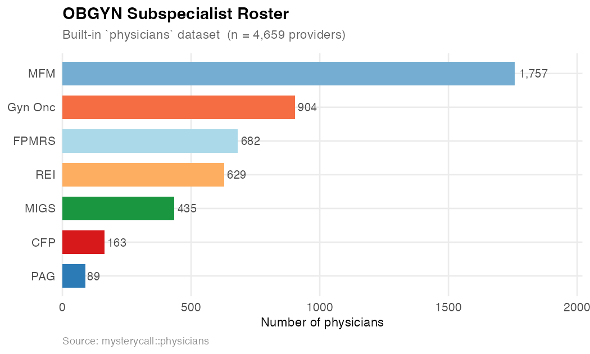
Provider roster — subspecialist counts from the built-in physicians dataset
library(mysterycall)
# Search NPI registry by taxonomy
providers <- mysterycall_search_taxonomy(
"Gynecologic Oncology",
states = c("CA", "TX", "NY", "FL")
)
# Built-in dataset has 4,659 providers
count(physicians, subspecialty)
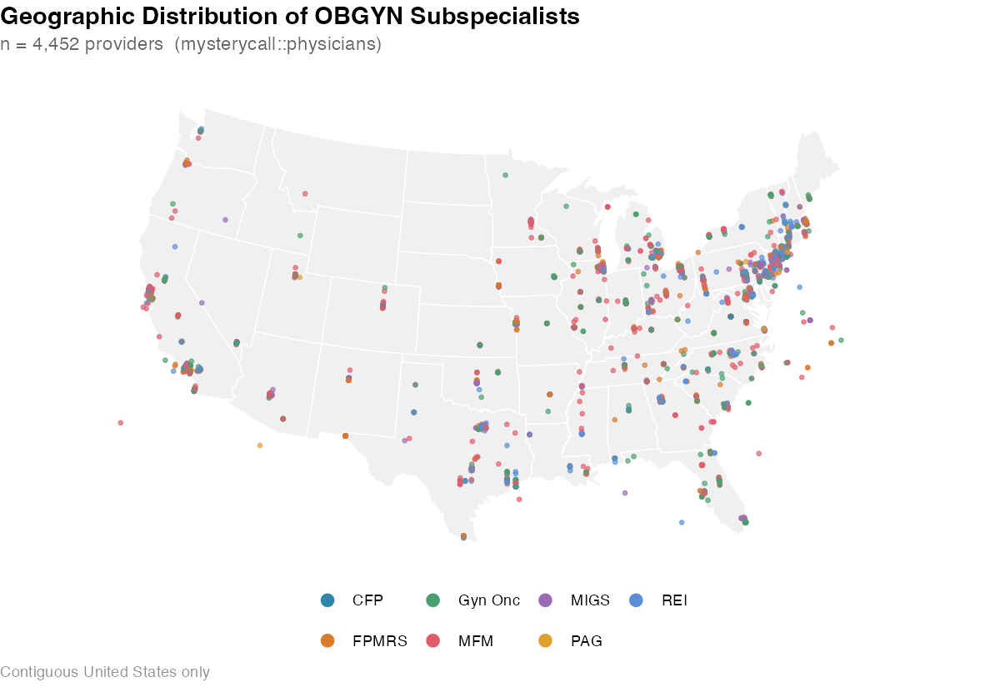
Geographic distribution — dot map of providers coloured by subspecialty
# physicians dataset includes lat/long mysterycall_map_physicians( physicians, popup_var = "name" )
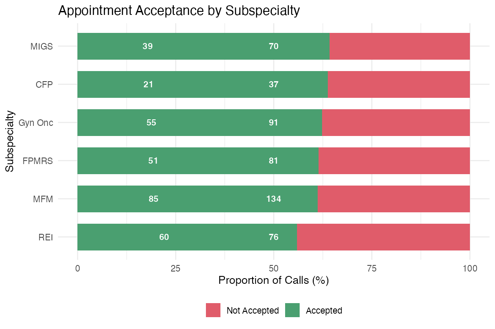
100% stacked bar — acceptance vs. rejection proportions with call counts
mysterycall_plot_stacked_bar(
data = call_data,
outcome_col = "accepted",
group_col = "subspecialty",
fill_labels = c("Not Accepted", "Accepted"),
order_by_rate = TRUE
)
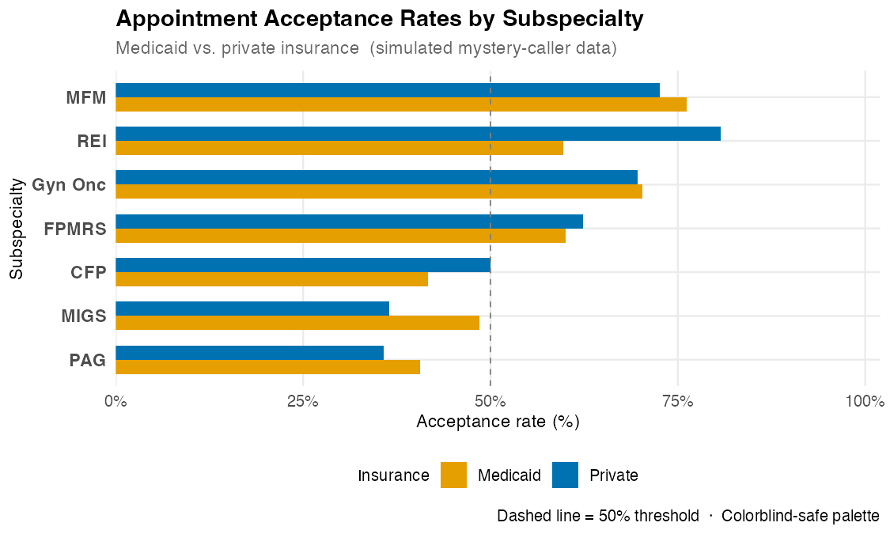
Acceptance rates — Medicaid vs. private insurance by subspecialty
call_data |>
group_by(subspecialty, insurance) |>
summarise(rate = mean(accepted)) |>
ggplot(aes(subspecialty, rate * 100,
fill = insurance)) +
geom_col(position = "dodge") +
coord_flip()
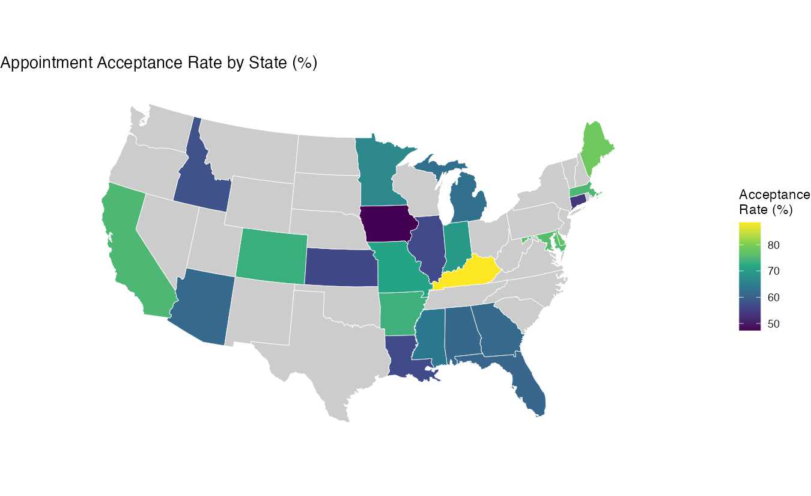
Choropleth map — appointment acceptance rate by state
state_rates <- call_data |> group_by(state) |> summarise(rate = mean(accepted)) mysterycall_map_acceptance_rate( state_rates, region_col = "state", rate_col = "rate", palette = "viridis" )
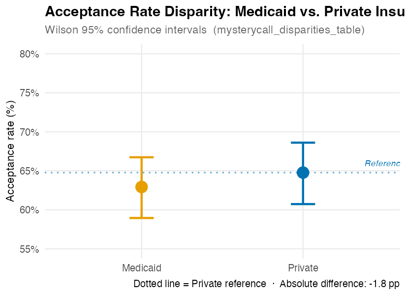
Insurance disparity — Wilson 95% CIs via mysterycall_disparities_table
disp <- mysterycall_disparities_table( call_data, outcome_col = "accepted", group_col = "insurance", ref_group = "Private", ci_method = "wilson" ) print(disp)
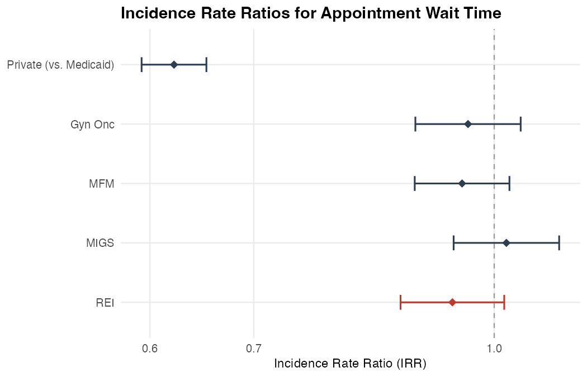
IRR forest plot — incidence rate ratios from a Poisson GLMM
model <- mysterycall_poisson_model(
call_data,
outcome = "wait_days",
predictors = c("insurance", "subspecialty"),
random_effect = "physician"
)
mysterycall_irr_plot(model, x_log = TRUE)
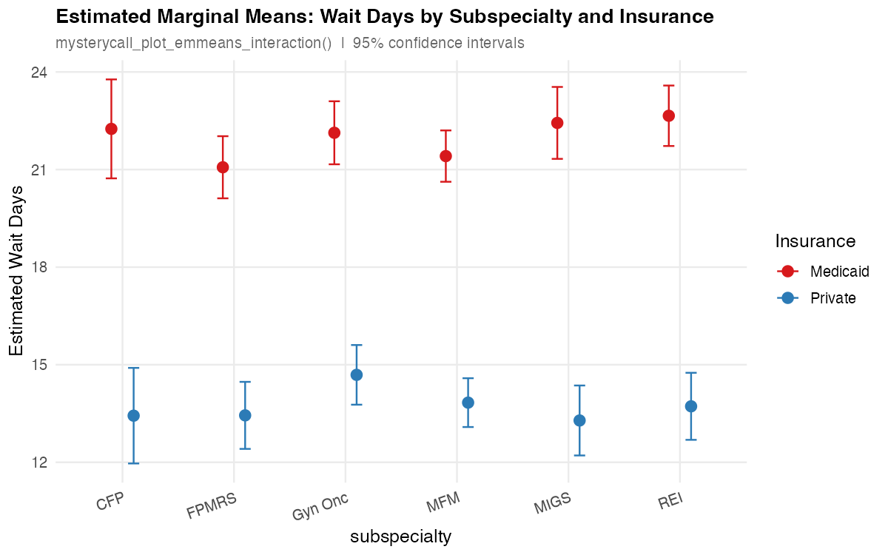
Estimated marginal means — Medicaid vs. private wait days by subspecialty
m <- lm(
wait_days ~ insurance * subspecialty,
data = call_data
)
mysterycall_plot_emmeans_interaction(
model = m,
specs = c("subspecialty", "insurance"),
variable = "Estimated Wait Days"
)
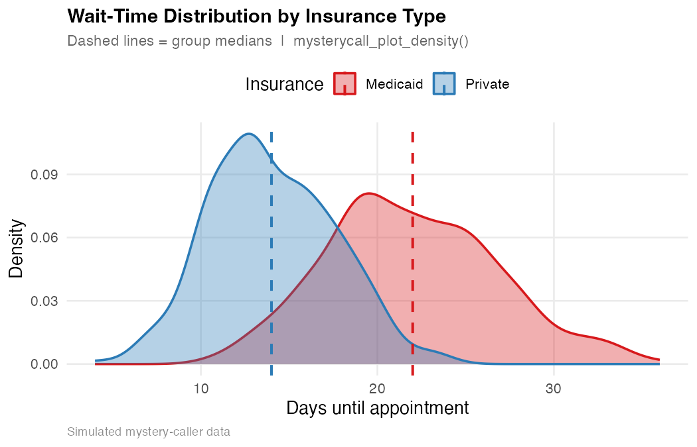
Wait-time density — overlapping distributions with group medians
mysterycall_plot_density( data = call_data, x_var = "wait_days", fill_var = "insurance", plot_title = "Days Until Appointment", output_dir = NULL )
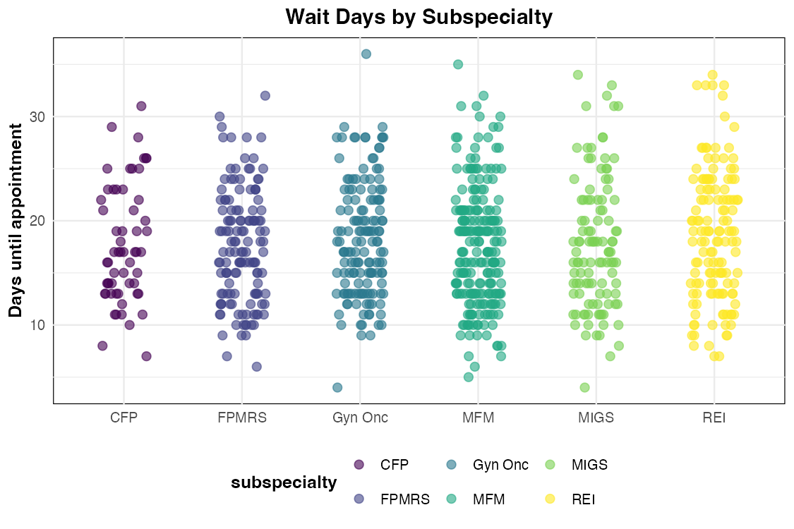
Jittered scatter — raw wait-day observations by subspecialty
mysterycall_plot_scatter( plot_data = call_data, x_var = "subspecialty", y_var = "wait_days", output_dir = NULL, verbose = FALSE )
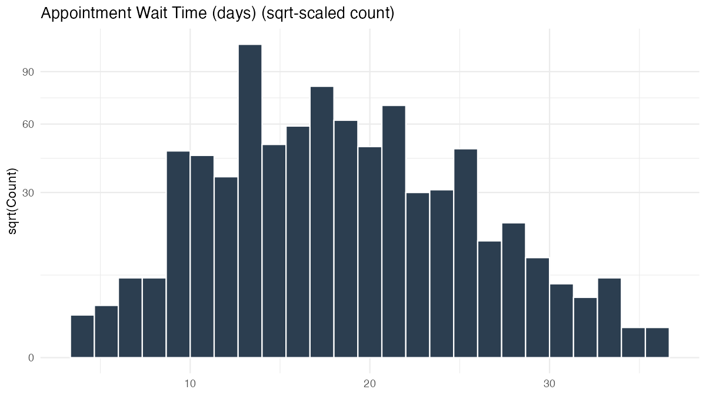
Wait-time histogram — sqrt-scaled count distribution
mysterycall_plot_distribution( x = call_data$wait_days, title = "Appointment Wait Time (days)", bins = 25L )
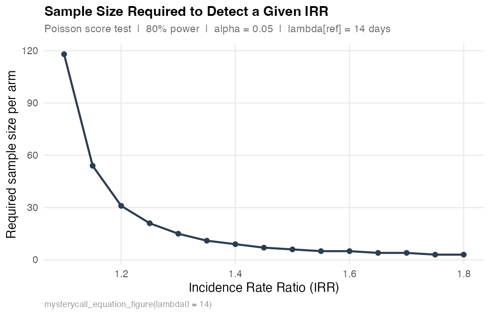
Power curve — providers per arm needed to detect a given IRR
mysterycall_equation_figure( lambda0 = 14, # baseline wait (days) irr_seq = seq(1.1, 1.8, by = 0.05), power = 0.80, both_arms = TRUE )
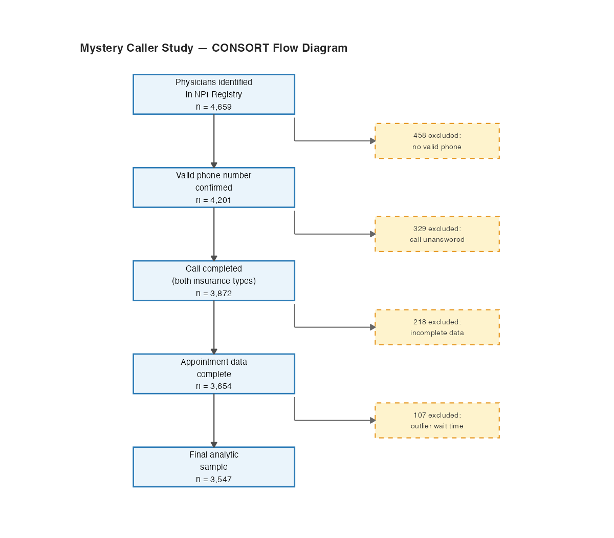
CONSORT flowchart — sequential inclusion/exclusion for audit studies
mysterycall_flowchart(
steps = c(
"NPI Registry" = "4,659",
"Valid phone" = "4,201",
"Call completed" = "3,872",
"Final sample" = "3,547"
),
exclusions = c(
"Valid phone" = "458: no valid phone",
"Call completed" = "329: unanswered",
"Final sample" = "325: incomplete data"
)
)
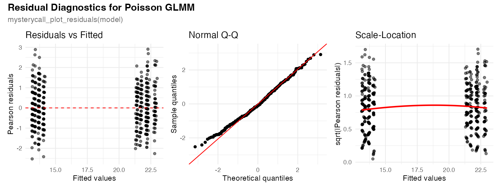
Residual diagnostics — three-panel model check for Poisson GLMM fit
model <- mysterycall_poisson_model(
call_data,
outcome = "wait_days",
predictors = c("insurance", "subspecialty"),
random_effect = "physician"
)
mysterycall_plot_residuals(model)
Example tables
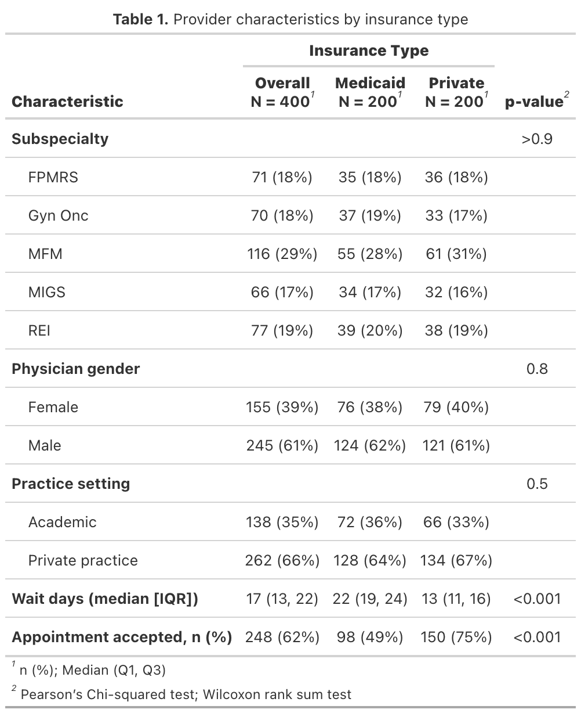
Table 1 — Provider characteristics stratified by insurance type via mysterycall_table1_gtsummary()
tbl1 <- mysterycall_table1_gtsummary(
data = call_data,
vars = c("subspecialty", "gender",
"academic", "wait_days", "accepted"),
strata_col = "insurance",
label_list = list(
subspecialty = "Subspecialty",
wait_days = "Wait days (median [IQR])",
accepted = "Appointment accepted, n (%)"
)
)
tbl1 |>
gtsummary::bold_labels() |>
gtsummary::as_gt()
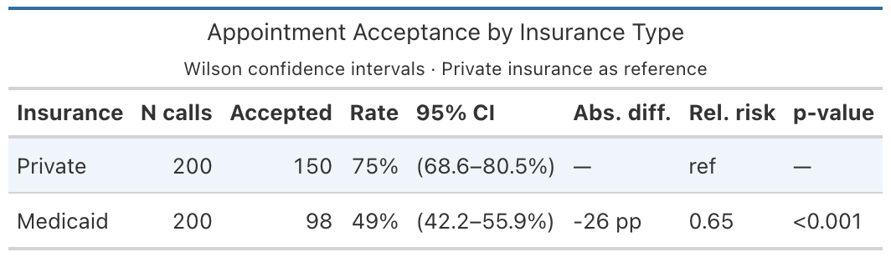
Disparities table — acceptance rates, Wilson CIs, absolute difference, and relative risk via mysterycall_disparities_table()
disp <- mysterycall_disparities_table( call_data, outcome_col = "accepted", group_col = "insurance", ref_group = "Private", ci_method = "wilson" ) print(disp)
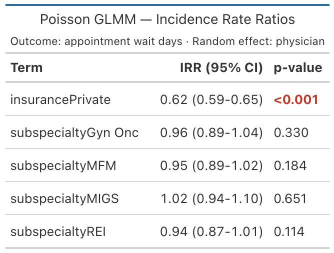
Model table — Incidence rate ratios from a Poisson GLMM via mysterycall_model_table()
model <- mysterycall_poisson_model(
call_data,
outcome = "wait_days",
predictors = c("insurance", "subspecialty"),
random_intercept = "physician"
)
# Extract print-ready IRR table
mysterycall_model_table(model)
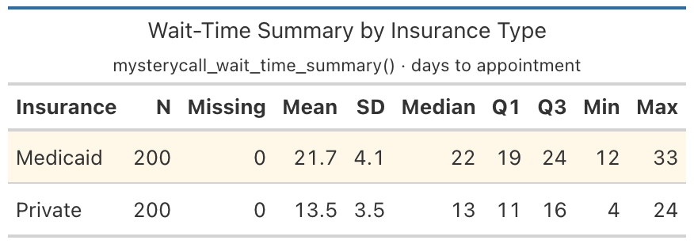
Wait-time summary — median, IQR, min/max, and Wilcoxon test via mysterycall_wait_time_summary()
wts <- mysterycall_wait_time_summary( call_data, wait_col = "wait_days", group_by = "insurance" ) # Summary statistics data frame wts$summary # Test result wts$interpretation
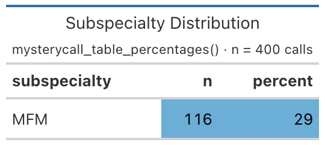
Frequency table — counts and column percentages for a categorical variable via mysterycall_table_percentages()
freq_df <- mysterycall_table_percentages( call_data, "subspecialty" ) print(freq_df)
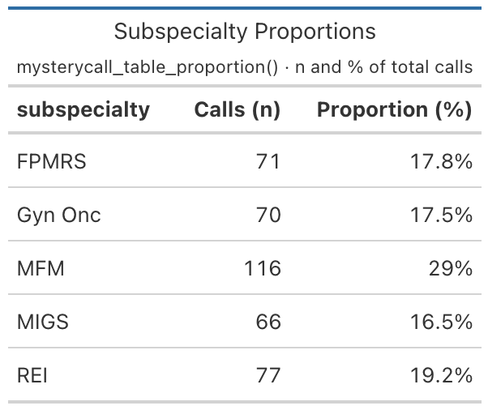
Proportion table — n and % of total calls per group via mysterycall_table_proportion()
prop_df <- mysterycall_table_proportion( call_data, subspecialty # unquoted column name ) print(prop_df)
Built-in datasets
| Dataset | Description | Rows |
|---|---|---|
taxonomy |
NUCC taxonomy codes (v23.1) for OBGYN subspecialties | ~900 |
ACOG_Districts |
State → ACOG district + Census subregion crosswalk | 51 |
acgme |
All 318 ACGME-accredited OBGYN residency programs | 318 |
physicians |
Sample roster of OBGYN subspecialists with coordinates | 4,659 |
fips |
State FIPS codes and abbreviations | 51 |
acog_presidents |
Historical ACOG presidents | — |
census_summaries |
Pre-computed Census block-group demographics | — |
Learn more
| Vignette | Topic |
|---|---|
| Create Isochrones | Drive-time polygons from geocoded addresses |
| Geocoding | Address → lat/lon with Google Maps |
| Get Census Data | ACS block-group demographics |
| Search & Process NPI | Name-based provider lookup |
| Aggregating Provider Data | Combining taxonomy + NPI data |
| News & Changelog | Release notes |
Citation
citation("mysterycall")Muffly, T. (2026). mysterycall: Mystery Caller Study Tools for Healthcare Access Research (R package version 1.3.0). https://github.com/mufflyt/mysterycall